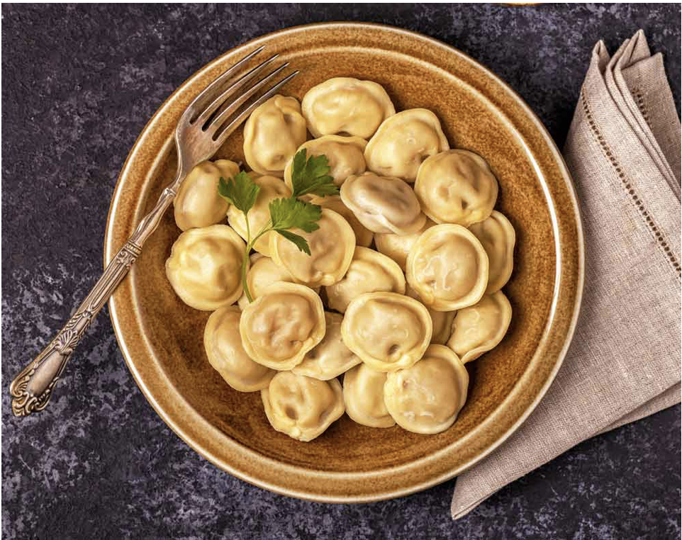

Agnolottis Caseros de Zapallo

Masa casera para una persona:
- Sobre una superficie lisa colocamos 100 gr. de harina junto con una pizca pequeña de sal, 1 huevo y una cucharada de aceite de oliva.
- El primer paso es batir un poco el huevo por arriba para luego integrarlo por completo con la harina. Después con la ayuda de las manos continuamos uniendo todo hasta formar una masa unificada. Si sobra un poco de harina le ayudamos agregando unas cucharadas de agua.
- El segundo paso es llevar esta masa a una superficie un poco enharinada donde podamos amasarla durante 15 minutos. Pasado el tiempo solo será cuestión de dejarla descansar por 30 minutos cubriéndola con un repasador por arriba.
- Después del tiempo de reposo es cuando estiramos la masa y comenzamos con la obra de arte.
Ingredientes para dos platos de agnolotti:
- Masa para agnolotti.
- Medio zapallo
- 1 cebolla
- 1 morrón
- 1 ajo
- 2 cucharadas de tomate triturado
- 100g de queso rallado
- Aceite de oliva
- Nuez moscada
- Sal
Paso a Paso:
- En una sartén al fuego con un poco de aceite en la base saltear cebolla picada junto con morrón picado, ajo y tomate triturado.
- Por otro lado, cocinar un zapallo para luego aplastarlo y unirlo con el resto de los ingredientes. Saltear esto por unos minutos más eliminando el exceso de líquido. Por último apagar el fuego y dejar enfriar.
- A la mezcla sumar una pizca de sal, queso rallado y nuez moscada.
- Estirar la masa, por los bordes humedecer con huevo batido y en el centro colocar una cucharada del zapallo, luego cerrar uniendo los bordes y reservar. Repetir el proceso con la totalidad del relleno.
- En una cacerola llevar abundante agua a ebullición y luego incorporar en ella la pasta dejando que cocine por 8-9 minutos.